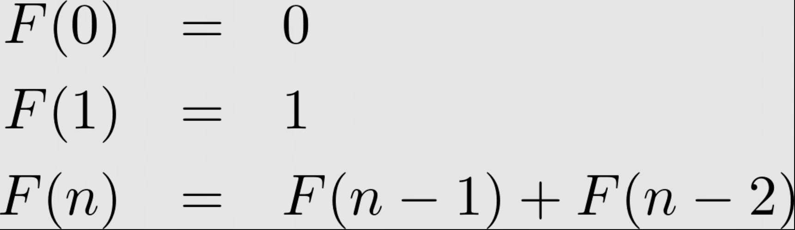

Lab 10: Dynamic Programming
Due Date and Submission Requirements
- Due Date: Friday, April 25th at 11:59 p.m.
- Partner Information: This is an individual assignment. You are allowed to collaborate with other students, but each student must submit their individual, independent solution.
- Submission Instructions: Upload your solutions (.java file) to the BrightSpace(D2L) Lab 10 Dropbox.
The goal of this lab is:
- Gain practice using Top-Down Dynamic Programming
Directions
You will be using Dynamic Programming to calculate the Nth digit in the Fibonacci sequence. You must use top-down dynamic programming, which means you will be doing recursion and maintaining a memoization table.
If you are unfamiliar with the Fibonacci sequence, you should spend 5 minutes looking it up on Google. The recursion for the Fibonacci sequence can be stated using the following notation:

Due to an exponential amoung of branching, this recursive algorithm really struggles with computing Fibonacci digits past n=20. Because the Fibonacci sequence has optimal substructure and overlapping subproblems , it makes a great candidate for dynamic programming.
You will need to implement dynamic programming and a memoization table, so the program is able to calculate large Fibonacci digits such as n = 50, n = 80.
You will download Lab10Demo.java as a starting point, and write the fib method, which recursively computes the Nth in the digit fibonacci sequence using top-bottom dynamic programming. You are welcome to change whatever you'd like in the starting code, but it still needs to compute the 10th, 60th, and 80th fibonacci digit.
Fibonacci digits are very large. In fact, they are so large that they cannot fit inside of an int datatype, so instead you will need to use a long datatype. Your memoization table should be an array of longs, or a HashMap that maps Integers (n values) to Longs (their fibonacci digit).
Required Output
When you run your program, it should look exactly like this.
Starting Code
Grading (10 points)
- Your program computes the 10th fibonacci digit correct- 2 points
- Your program computes the 60th fibonacci digit- 3 points
- Your program computes the 80th fibonacci digit- 5 points
NOTE: If your code does not compile, correctness cannot be verified, and you won't receive any points
for your code. Turn in code that compiles!